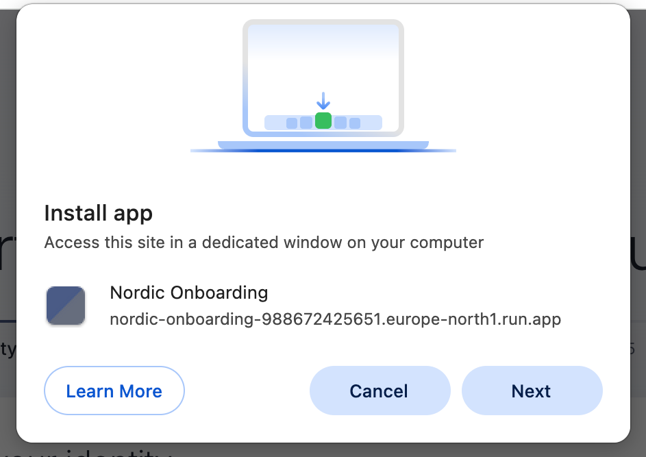
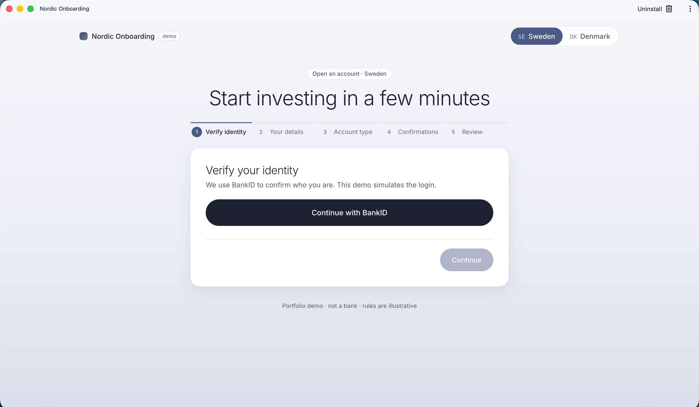
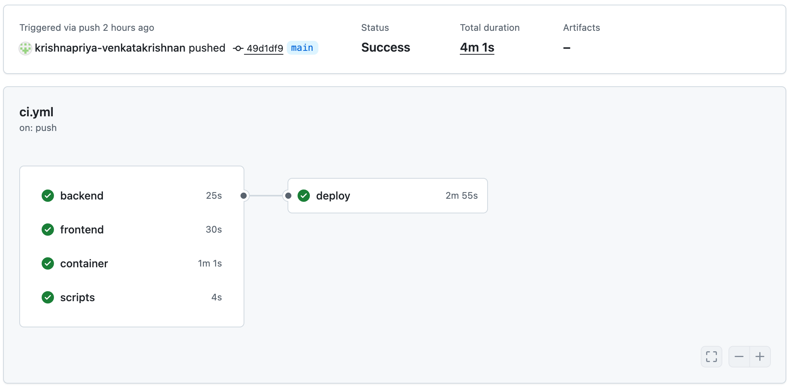
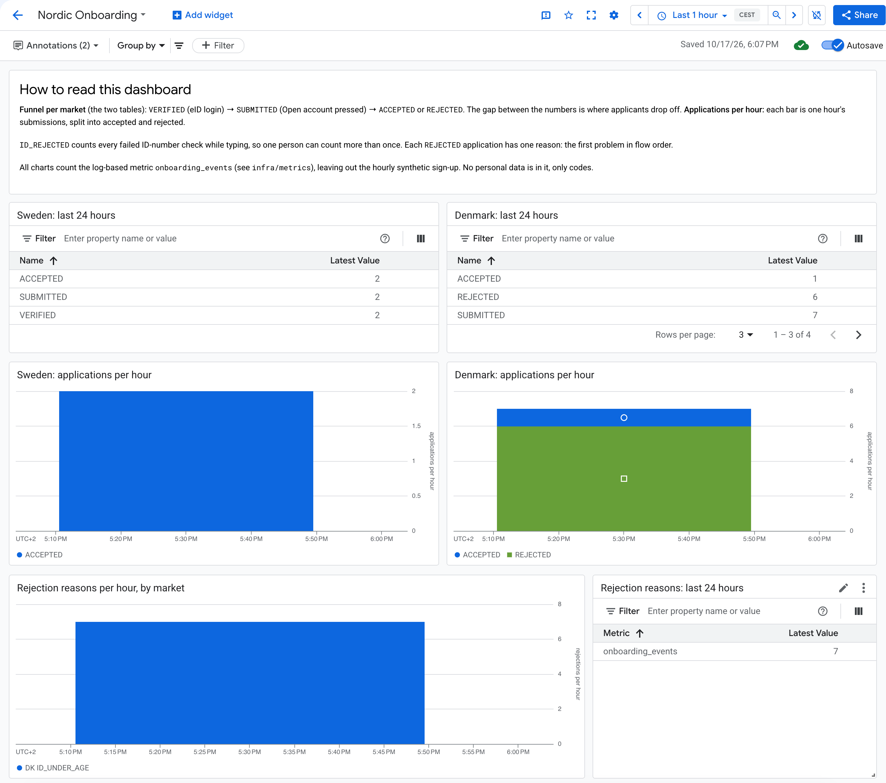
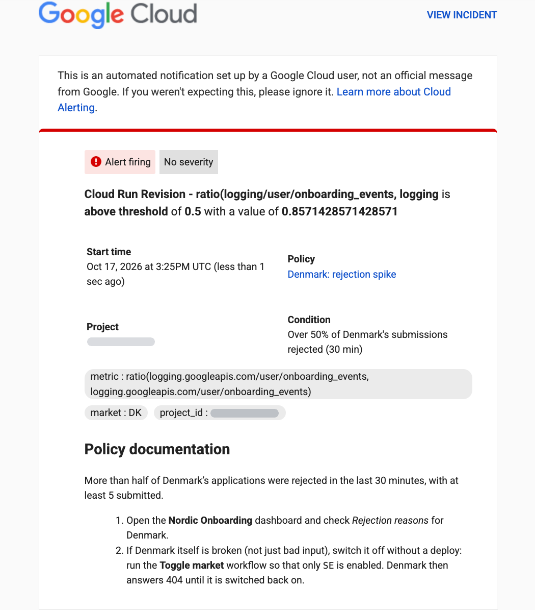

Account opening for a Nordic savings and investment platform that launches in a second
country without forking the code. Sweden and Denmark use one onboarding flow, and
everything that is different between them lives in a market module: one folder of plain
Java per country.
Each chapter starts with a short summary and one diagram, so reading only the first page
of each chapter already gives the whole picture. The pages after that go into detail.
The rounded links marked Where to look open the matching code on
GitHub. Every endpoint, message and JSON body in this guide is taken from the code or
from the live demo's answers.
What is simulated. The eID login (BankID, MitID) is simulated, nothing a
customer enters is stored or sent anywhere, and the product rules are simplified examples,
not legal or tax text.
Nordic Onboarding · A technical guide
Nordic Onboarding · A technical guideChapter 1 · Data flow
Chapter 1
Data flow
One Danish application, end to end
This chapter follows one Danish account application from the click in the browser to
the server's answer and back. Sweden takes exactly the same path through the same code.
Only the market's data and its ID-number rule are different.
Four kinds of API call make up the journey. The browser checks what it can, for speed.
The server checks everything again at the end, because anyone can skip the browser and
send requests to the server directly.
sequenceDiagram
autonumber
participant B as Browser (Angular app)
participant A as REST API (MarketController)
participant S as OnboardingService
B->>A: GET /api/markets
A-->>B: 200 the live markets, SE and DK
B->>A: GET /api/markets/DK/onboarding
A->>S: config(DK)
A-->>B: 200 Denmark's whole flow, as data
B->>A: POST /api/markets/DK/identity/sessions
A->>S: startIdentitySession(DK)
A-->>B: 200 a session id. Event VERIFIED
Note over B,S: Once the CPR number is complete, and again after each change
B->>A: POST /api/markets/DK/national-id/check
A->>S: checkNationalId(DK, value)
A-->>B: 200 valid, or a message
B->>A: POST /api/markets/DK/applications
A->>S: submit(DK, application)
A-->>B: 201 accepted, or 422 with reasons
The whole journey. Each arrow to the right is one request from the browser; the
service does the work and the controller only speaks HTTP.
Chapter 1 · Data flow
Nordic Onboarding · A technical guideChapter 1 · Data flow
The four calls
Load Denmark:GET /api/markets, then
GET /api/markets/DK/onboarding
Check the CPR number:POST /api/markets/DK/national-id/check
Open the account:POST /api/markets/DK/applications
The market code is part of every URL, so every market uses the same endpoints and the
same controller. For Sweden, the same four calls use SE instead of
DK: GET /api/markets/SE/onboarding, and so on. The same code
handles them, and MarketRegistry hands it Sweden's rules instead of
Denmark's. There is no Sweden-only or Denmark-only endpoint.
What the answers mean
200 OK
The data that was asked for: the markets, a market's configuration, an ID check.
201 Created
The application was accepted.
422 Unprocessable
The application was rejected. The body lists the reasons, in the order of the flow.
404 Not Found
The market is switched off, or doesn't exist. Both look exactly the same.
A 404 is a standard problem detail (RFC 9457), from the live demo:
A rejected application answers 422, not an error. A rejection is a
normal outcome, so its body is ordinary data that the browser shows as a list, with a link
from each reason back to the step that fixes it.
Chapter 1 · Data flow
Nordic Onboarding · A technical guideChapter 1 · Data flow
Loading Denmark: the screens come from configuration
The browser loads the Angular app from the same server, or from the service worker's
cache on a repeat visit. The service worker is a small script the browser installs for
this site. It keeps a copy of the app's files on the person's device, but never the API's
answers.
The app asks which markets are live with GET /api/markets, and draws the
Sweden/Denmark switch from the answer. A link ending in #dk picks Denmark,
and GET /api/markets/DK/onboarding returns the whole flow as data:
Trimmed from the live answer: some fields and confirmations are left out.
The deposit cap is data, too
Aktiesparekonto's yearly cap is looked up for the current year in Copenhagen time:
174,200 DKK in 2026. A new year's cap is one more entry in a map, not new code.
No Danish code in the app
The Angular app shows what the configuration describes, for any market.
When the market can't be loaded
"Couldn't reach the server. Check your connection and try again."
The server didn't answer at all: no internet, or the server is down.
"This market isn't available right now." The server answered 404,
because the market was switched off after the page loaded.
Choosing another market clears the message and shows that market.
Nordic Onboarding · A technical guideChapter 1 · Data flow
Step 1
Verify identity, with simulated MitID
"Continue with MitID" sends POST /api/markets/DK/identity/sessions.
Session here means an eID login session on the server, not a browser
session or a cookie, and this call is the identity check, simulated. In a real
system the person would sign in at MitID, and MitID would send back a signed proof for the
server to verify. Here, the call pretends that succeeded.
The server creates a session id, remembers in memory that it belongs to Denmark, records
a VERIFIED event, and answers:
It is the proof of login. The browser keeps it in memory and sends it with the
application. The server then checks that it exists and belongs to Denmark, and
deletes it once an application is accepted, so one login can only be used for one
application.
Why it can disappear
It lives in the server's memory. A restart or a new release forgets it, and the
person is asked to log in again. That is also why the service runs one instance.
Step 1: the simulated MitID login has succeeded.
Chapter 1 · Data flow
Nordic Onboarding · A technical guideChapter 1 · Data flow
Step 2
The CPR number is checked twice
flowchart LR
K["Keystroke"] --> F{"Complete format?"}
F -- "yes" --> W["Wait 350 ms"]
W --> C["Server check CprRule + age"]
C --> M["Looks good. or the reason"]
F -- "not yet" --> H["A hint only no server call"]
The browser only checks the format. While the number is incomplete it shows the demo
test number as a hint, and "Use the format DDMMYY-SSSS." once the field is left. During
the server check it shows "Checking…".
In the browser, the format pattern from the configuration is checked
on every keystroke, for instant feedback. Only when the field holds a complete number
in the right format, and 350 ms after the last keystroke, does the browser ask the
server. It doesn't wait for the person to leave the field. A new keystroke cancels a
check that is still waiting, and the same number is never sent twice.
On the server, Denmark's CprRule reads the number: the
format, the century from the 7th digit, a real date, and not a date in the future. It
deliberately has no modulus-11 check, an old checksum for CPR numbers. Denmark stopped
guaranteeing it in 2007, so the check would reject real people.
Then comes the shared rule, written once for every market: the person
must be at least 18 on today's date in Copenhagen.
{ "valid": false,
"message": "You must be at least 18 to open an account yourself." }
Each rejection records an ID_REJECTED event with a reason code, such as
ID_UNDER_AGE.
On a phone: the server's age rule answers while the person types.
Chapter 1 · Data flow
Nordic Onboarding · A technical guideChapter 1 · Data flow
Steps 3 and 4
Account type and confirmations
The account type is chosen in the browser, from the configuration: Aktiesparekonto or
Depot. No call is needed, because the configuration already holds both, with this year's
deposit cap.
Aktiesparekonto adds two confirmations, marked For this account: "I don't
already hold an Aktiesparekonto with another bank" and "I am fully tax liable to Denmark".
Switching account type drops confirmations that no longer apply, and Continue stays
disabled until every required one is ticked.
Step 3: the account types offered in Denmark, with this year's deposit cap.Step 4: the last two confirmations appear only because Aktiesparekonto was chosen.
Which confirmations a market asks for, and which ones belong to a single account type, is
data in the market module. The confirmation screen has no Danish code.
Chapter 1 · Data flow
Nordic Onboarding · A technical guideChapter 1 · Data flow
Step 5
"Open account"
The browser sends POST /api/markets/DK/applications with:
Everything the browser checked along the way, it checked for speed. The server now checks
all of it again.
Step 5: the review before the application is sent.
Chapter 1 · Data flow
Nordic Onboarding · A technical guideChapter 1 · Data flow
On the server
flowchart LR
CR["Cloud Run europe-north1"] --> MC["MarketController HTTP only"]
MC --> OS["OnboardingService shared rules"]
OS --> MR["MarketRegistry 404 if DK is off"]
MR --> DM["DenmarkMarket + CprRule"]
OS -.-> EV["Events codes only"]
The request passes through layers that each have one job. The controller only speaks
HTTP. OnboardingService holds the rules every market shares.
MarketRegistry turns DK into Denmark's market module, or
answers 404 if Denmark is switched off. The market module supplies Denmark's data and
its ID rule.
The identity session exists and belongs to Denmark.
The CPR number is valid, and the person is at least 18.
A full name is given.
The email address is valid.
The account type is offered in Denmark.
Every confirmation required for that account type is accepted.
Events: SUBMITTED, then either ACCEPTED, or
REJECTED with the first failed check as its reason.
Chapter 1 · Data flow
Nordic Onboarding · A technical guideChapter 1 · Data flow
The answer, and back in the browser
201 Created: accepted. The server then deletes the login session, so
this login can't be used for another application. Logging in again would still work:
nothing is stored that could stop the same person applying twice (see "What this does
not catch").
422: rejected, with the reasons in the order of the flow. Each one links
back to its step. An identity error asks for a new MitID login.
{ "accepted": false, …"errors": [ {
"field": "nationalId",
"code": "ID_UNDER_AGE",
"message": "You must be at least 18
to open an account yourself." } ] }
Accepted: the browser shows the reference, account, market and currency, with a clear
note that nothing was opened or saved.
Network failure during the submit: the browser shows "Something went
wrong. Please try again."
Switching market while a request is waiting cancels it in the browser,
so Sweden's screen never receives Denmark's answer. The server may already have handled
it, but nothing is stored either way.
Chapter 1 · Data flow
Nordic Onboarding · A technical guideChapter 1 · Data flow
What this path never does
Stores nothing
There is no database. The login session lives only in the server's memory.
Logs no personal data
Events carry codes only: market, step, outcome, reason. Anything that looks like an ID
number is masked in every log line.
Caches no API answer
The service worker keeps the app itself, never market configuration, so a switched-off
market can't be shown from a cache.
What this does not catch: duplicates. The same person can log in again
and apply again. With no database, nothing remembers earlier applications, and "one
Aktiesparekonto per person" is only a confirmation the person ticks. A real system would
check its customer records.
Design decisions
Why check the ID number on the server if the browser already checks it?
The browser only checks the format, for speed. The real rule needs today's date and the
shared age policy, and any client can skip the browser's checks entirely, for example
with curl.
Why answer a rejected application with 422 instead of an error?
A rejection is a normal outcome, not a failure. The body carries the field errors, so
the browser treats them as data and links each one to its step.
Why is the market code in the URL?
One controller serves every market. The registry turns the code into a market, or into
a 404 if that market is switched off.
What happens if Denmark is switched off in the middle of an application?
Every later Danish call answers 404. If the next one is the submit, the browser shows
"Something went wrong. Please try again." The login session is gone too, because
switching a market off starts a new revision of the service with empty memory.
Chapter 1 · Data flow
Nordic Onboarding · A technical guideChapter 2 · Architecture
Chapter 2
Architecture
The layers, and why each boundary exists
The code is split so that adding a market never means changing the shared code. The
browser only renders what the server's configuration describes. On the server, every
dependency points towards the domain: the shared rules in plain Java, which depend on
nothing but Java itself.
Each country is a plug-in that implements one interface. Tests fail the build if a
boundary is crossed: if the domain or a market imports a framework, if one market uses another, or
if a market breaks the contract every market must follow.
flowchart TB
subgraph browser["Browser · Angular"]
direction LR
SH["App shell market switch"] --> FL["OnboardingFlow state and steps"]
FL --> ST["Step components show and emit"]
FL --> API["MarketApi the only HTTP client"]
end
subgraph server["Spring Boot · Cloud Run"]
direction LR
WEB["web HTTP only"] --> DOM["domain shared rules, plain Java"]
MK["markets/se, markets/dk one plug-in per country"] --> DOM
LOG["logging events to JSON logs"] --> DOM
CFG["config wiring at startup"] -.-> DOM
end
browser -- "JSON over HTTPS" --> server
An arrow means "uses". Every arrow on the server points at the domain; the dotted one is
the wiring at startup.
Chapter 2 · Architecture
Nordic Onboarding · A technical guideChapter 2 · Architecture
Where each piece runs
Everything is deployed as one container on Cloud Run: one Java process,
whose jar holds the Java backend and the built Angular files. The Angular app is stored
there, but runs in the visitor's browser once downloaded.
flowchart TB
B["Browser: runs the Angular app"] -- "HTTPS" --> G["Google's front end: handles HTTPS"]
G -- "plain HTTP, port 8080" --> C
subgraph C["One container"]
direction LR
T["Tomcat + Angular files"] --> W["MarketController"] --> D["OnboardingService"] --> M["DenmarkMarket + CprRule"]
end
The only network hop is between the browser and the server.
One "Open account" click, hop by hop
1 · Browser → Google
HTTPS over the internet: POST /api/markets/DK/applications, with a JSON body.
2 · Google → container
Plain HTTP on port 8080, inside Google's network.
3 · Tomcat → controller
Spring matches the POST and the URL to MarketController.submit, and
Jackson turns the JSON body into a Java object, ApplicationRequest.
4 · controller → service
A plain Java method call in the same process: OnboardingService.submit.
5 · service → market
Plain method calls to MarketRegistry, DenmarkMarket and CprRule.
6 · back
The result becomes JSON with 201 or 422, and travels back the same way.
What a market module is
One folder per country, such as markets/dk: DenmarkMarket
holds Denmark's data and CprRule reads its ID numbers. It is a Java package
compiled into the same jar, not a separate service.
On a laptop it's two processes
ng serve runs the Angular app on port 4200 and passes /api
calls to Spring Boot on port 8080. In production, both are the one container.
Chapter 2 · Architecture
Nordic Onboarding · A technical guideChapter 2 · Architecture
The boundaries, and what guards each one
Browser and server
What passes between the two sides: JSON. The server sends a market's whole flow as
configuration; the browser sends the application back.
Why: the Angular app has no country code, so a new market needs no
frontend change.
web and domain
What passes between the two sides: plain method calls, such as
submit(code, request). The web layer turns HTTP into calls, and results
into status codes: 201, 422, 404.
Why: the rules are tested without starting a web server.
Guard:MarketApiTest for the HTTP contract.
domain, markets and frameworks
What passes between the two sides: nothing. The domain imports only Java, and the
markets only Java and the domain. Why: they stay simple to test and
easy to move. Guard: two ArchUnit rules in
ArchitectureTest.
domain and markets
What passes between the two sides: the Market interface. A market
supplies data and parsing rules; the domain applies the shared policy.
Guard:MarketContractTest, which every market must
pass.
market and market
What passes between the two sides: nothing. Sweden and Denmark never use each other,
so a change for one country can't break the other. Guard: a second
ArchUnit rule.
domain and the outside world
What passes between the two sides: two small interfaces, called ports: a
Clock for time and OnboardingEvents for what happened.
Why: tests set "today" and read the events, and the domain never
knows about logs. Guard:OnboardingServiceTest.
built and live
What passes between the two sides: the setting MARKETS_ENABLED. A market
can be deployed and still be dark. Guard:MarketRegistryTest.
Chapter 2 · Architecture
Nordic Onboarding · A technical guideChapter 2 · Architecture
The contract every market implements
A market is one class that implements Market. Everything that differs
between countries is a method here: the code, the language and currency, the time zone,
the eID, how to read the ID number, the account types and the confirmations.
public interface Market {
String code(); // "SE", "DK"
String displayName();
Locale locale();
ZoneId zone(); // where "today" is decided
Currency currency();
IdentityProvider identityProvider();
NationalIdRule nationalIdRule(); // how to read this country's ID number
List<AccountProduct> products();
List<Disclosure> disclosures();
default List<StepType> steps() { return List.of(IDENTITY, PERSONAL_DETAILS, ACCOUNT_TYPE,
DISCLOSURES, REVIEW); }
default int minimumAge() { return 18; }
}
Two methods have defaults: the steps and the minimum age. A market changes them only if
it needs to. The ID rule is a second, smaller interface:
public interface NationalIdRule {
String label(); // "Personnummer", "CPR number"
String placeholder(); // "YYYYMMDD-NNNN", "DDMMYY-SSSS"
String example(); // a well-known test number, never a real person's
String formatPattern(); // a loose pattern for the browser; the server decides
NationalIdResult parse(String raw, LocalDate today);
}
Markets supply data and parsing rules. They don't decide policy. A market
says how to read its ID number and what its minimum age is. The check "is this person old
enough?" is written once, in OnboardingService, and applies to every market.
Nordic Onboarding · A technical guideChapter 2 · Architecture
A market module: rules are data
Denmark's module is DenmarkMarket and its ID rule, CprRule,
side by side in markets/dk. Its account types are data. The deposit cap is a
map from year to amount, not an if statement, so next year's cap is one more
entry:
new AccountProduct(AKTIESPAREKONTO, "Aktiesparekonto",
"Returns taxed at 17% each year. One per person, with an annual deposit cap.",
Map.of(2025, new BigDecimal("166200"), 2026, new BigDecimal("174200")), true),
new AccountProduct("depot", "Depot (frie midler)",
"A standard investment account with no deposit cap. Returns are taxed as share income.",
Map.of(), false)
Confirmations are data too, and some belong to one account type only:
Disclosure.required("terms", "I have read and accept the account terms and conditions."),
Disclosure.requiredFor(AKTIESPAREKONTO, "ask-tax-liable", "I am fully tax liable to Denmark."),
Disclosure.optional("news", "Send me occasional product news by email.")
The contract test every market must pass
MarketContractTest runs the same checks for every market in its list. Adding
Norway to the list runs them all for Norway too:
Codes are unique, two-letter country codes.
The market has a time zone.
The flow starts with identity and ends with review.
It offers at least one account type, with unique ids.
It requires the terms to be accepted.
Confirmation ids are unique.
Every confirmation that belongs to one account type names an account type that
exists, so a typo can't silently drop it.
The ID field is consistent: its example matches the pattern and is valid, and
garbage is rejected.
Nordic Onboarding · A technical guideChapter 2 · Architecture
Boundaries the build enforces
Three ArchUnit rules read the compiled classes on every build. If any is broken, the
build fails before anything is deployed.
/** Rule 1: the domain is plain Java. This also keeps it from knowing about any one market. */static final ArchRule domainIsPlainJava = classes()
.that().resideInAPackage("dev.krishnapriya.onboarding.domain..")
.should().onlyDependOnClassesThat()
.resideInAnyPackage("java..", "dev.krishnapriya.onboarding.domain..");
/** Rule 2: markets never use each other, so a change for one country cannot break another. */static final ArchRule marketsAreIndependent = slices()
.matching("dev.krishnapriya.onboarding.markets.(*)..")
.should().notDependOnEachOther();
/** Rule 3: markets are plain Java too, using only Java and the domain. */static final ArchRule marketsArePlainJava = classes()
.that().resideInAPackage("dev.krishnapriya.onboarding.markets..")
.should().onlyDependOnClassesThat().resideInAnyPackage(
"java..", "dev.krishnapriya.onboarding.domain..", "dev.krishnapriya.onboarding.markets..");
Rule 1 does two jobs: Spring can't sneak into the domain, and neither can a market, because
the market packages are outside it too.
Ports: time and events
The domain needs two things from the outside world: the current time, and somewhere to
report what happened. It asks for both through small interfaces, called ports, and
Spring plugs in the real ones at startup:
Time: an injected Clock
In production it is the system clock in UTC, and each market turns it into its own
local date. In tests it is fixed, so "today" can be any date, including the minute
before and after an 18th birthday at Copenhagen midnight.
Events: OnboardingEvents
In production, OnboardingLog writes each event as a JSON log line. In
tests, a plain list collects them, so a test can check exactly which events an
application produced.
// OnboardingServiceTest: a fixed clock, and events collected in a list
Clock clock = Clock.fixed(instant, ZoneOffset.UTC);
MarketRegistry registry = new MarketRegistry(
List.of(new SwedenMarket(), new DenmarkMarket()), Set.of("SE", "DK"));
private final List<OnboardingEvent> events = new ArrayList<>();
// ... new OnboardingService(registry, clock, events::add)
ApiExceptionHandler turns an unknown or switched-off market into a 404
problem detail. A built but disabled market looks exactly like one that doesn't exist.
Synthetic traffic, kept out of the domain
SyntheticTrafficFilter spots the hourly test sign-up by a request header
and tags its log lines. The domain never sees the header.
One place where Spring meets the domain
MarketWiring creates the markets, the registry, the clock, the event logger
and the service. It is the only class that connects the plain-Java domain to Spring:
Built is not the same as live. The registry receives every built market,
but only enables the codes in MARKETS_ENABLED. It checks every built market
for a duplicate code, so a clash fails the release that ships a market dark, not the
later switch that launches it.
Nordic Onboarding · A technical guideChapter 2 · Architecture
The frontend renders configuration
The Angular app is split the same way: one part holds state, the parts below it only show
and emit, and none of them knows a country.
App shell app.ts
Loads the list of live markets, draws the Sweden/Denmark switch, loads the chosen
market's configuration, and shows the error messages. Quick switching always ends on
the last market clicked.
Flow onboarding-flow.ts
Holds the application's state, in Angular signals and one reactive form: the current
step, the login session, the details, the chosen account and the ticked confirmations. It decides when
Continue is allowed, calls the API, and resets everything when the market changes.
Steps steps/*.ts
The identity, details, account type and confirmation screens. Each one receives the
configuration as an input and reports what the person did as an output. None of them
calls the server.
Core core/*.ts
The types that mirror the server's JSON, small helpers such as formatting money in the
market's locale, and MarketApi, the only code that sends HTTP requests.
No country code. The labels, the ID format, the account types, the caps
and the confirmations all come from GET /api/markets/{code}/onboarding. The
same components show Sweden and Denmark.
Nordic Onboarding · A technical guideChapter 2 · Architecture
Installable as an app
The frontend is a progressive web app (PWA). A manifest gives it a name,
icons and its own window, and a service worker keeps a copy of the app's
files on the device, so it can start without a connection.

Chrome's install dialog. The name and the icon come from the app's manifest.
The one boundary the service worker keeps
It caches the app itself, but never an API answer. A cached market configuration
could show a market that the kill switch has turned off. Requests to
/api and /actuator always go to the server.
A frontend test checks these cache rules, and CI checks that the real container serves
the manifest, the icons and the worker.

Installed on a Mac: its own window, with no browser address bar.
Chapter 2 · Architecture
Nordic Onboarding · A technical guideChapter 2 · Architecture
Design decisions
Why one service for every market, not one per market?
The flow and the shared rules are the same everywhere, so one service keeps them in one
place. A service per market would copy them, and the copies would drift apart.
Why is a market a class, not a configuration file?
Most of a market is data, but reading an ID number is real logic: check digits,
century rules, impossible dates. A class can hold both, and the contract test can call
it.
Why can't markets use each other, even to share code?
So that a change for one country can't break another. Code that two markets truly
share belongs in the domain, where every market can use it and the domain's tests
cover it.
Why keep the domain free of Spring?
Its tests run as plain Java, in a fraction of a second, without starting anything. It also keeps
the rules readable: what's in the domain is business logic, nothing else.
Why a registry instead of a switch on the market code?
Adding a market then means registering one more object. There is no list of countries
in the shared code to update, and a dark market answers 404 like any unknown code.
Adding Norway, in short: a NorwayMarket and a
FodselsnummerRule in markets/no, one bean in
MarketWiring, one entry in MarketContractTest. Nothing in the
domain, the web layer or the Angular app changes.
Chapter 2 · Architecture
Nordic Onboarding · A technical guideChapter 3 · Delivery
Chapter 3
Delivery
From git push to traffic on a new version
Every change goes through a pull request, and CI tests it in four jobs before it can
reach main. When main is green, the deploy job releases it by itself: Google Cloud builds
the image, starts a new version that gets no traffic, and the release smoke-tests that
version at its own private address. Only then does it move all traffic.
The last release took 4 minutes from the merge to 100% of traffic. A broken build never
reaches customers, and going back is one command.
flowchart TB
P["Pull request"] --> CI["CI: backend, frontend, container, scripts"]
CI -- "merge: green main" --> B["The image is built in Google Cloud, from source"]
B --> C["A new revision starts with 0% of traffic, at its own candidate URL"]
C --> S{"Smoke test"}
S -- "pass" --> T["100% of traffic"]
S -- "fail" --> X["Customers stay on the current revision"]
The same pipeline runs for every change. A revision is one deployed version of the
service; Cloud Run keeps the old one serving until the new one is proven.
Chapter 3 · Delivery
Nordic Onboarding · A technical guideChapter 3 · Delivery
What CI checks
CI runs on every pull request, and again on main after the merge. A newer push to a branch
cancels that branch's older run, but a run on main is never cancelled, because it may be
in the middle of a release.

The merge of pull request #9: four jobs in parallel, then the deploy. 4 minutes 1 second
in total.
backend
mvn verify: 115 tests, including the ArchUnit rules, the market
contract, the HTTP contract and the monitoring contract tests.
frontend
37 tests, then the production build.
container
Builds the real image and starts it. Then it checks that it passes the smoke test,
runs as a non-root user, completes a synthetic sign-up in both markets, writes JSON
logs with tagged events, can be installed as a PWA, and goes dark for a market that
is switched off.
scripts
Tests the release and kill-switch scripts against a fake gcloud, so
their logic is checked without touching Google Cloud.
deploy
Runs only on main, only after all four jobs pass, and only one at a time.
Nordic Onboarding · A technical guideChapter 3 · Delivery
One image: Angular inside the Spring Boot jar
The Dockerfile builds the whole app in three stages, so the image that runs
holds only a Java runtime and one jar:
Frontend: Node 24 installs the exact packages from the lock
file and runs the Angular production build.
Backend: Maven builds the Spring Boot jar, with the Angular
build copied in as its static files. Dependencies get their own layer, so a code
change doesn't download them all again.
Runtime: a Java 25 runtime and the jar, nothing else. The tests
already ran in CI, so the image build skips them.
# 3. Runtime: only a Java runtime and the jarFROM eclipse-temurin:25-jre
COPY --from=api /api/target/onboarding-0.1.0.jar app.jar
ENV LOGGING_STRUCTURED_FORMAT_CONSOLE=dev.krishnapriya.onboarding.logging.CloudLoggingFormat
# Not root, so a compromised app can't modify the image or anything else it doesn't own.USER 1000
# Java defaults to a quarter of the container's memory for its heap; small instances need more.ENTRYPOINT ["java", "-XX:MaxRAMPercentage=75", "-jar", "/app/app.jar"]
Same origin, no CORS
Because the Angular files are served by the same Spring Boot app as the API, the
browser calls /api/... on the same address. There is no second service
and no cross-origin setup.
Only what's needed is uploaded
.gcloudignore keeps .git and everything in
.gitignore out of the upload. .dockerignore is an allowlist:
only the backend sources and the frontend reach the image build.
Nordic Onboarding · A technical guideChapter 3 · Delivery
The release, step by step
scripts/deploy.sh does the release. The deploy job signs in to Google Cloud
(Chapter 4 explains how) and runs it:
Refuse an unsafe upload. If a credentials file would be
uploaded with the source, the release stops before anything changes.
Deploy with no traffic.gcloud run deploy --source .
--no-traffic --tag=candidate builds the image in Google Cloud and starts a new
revision. Customers can't reach it: it is only at its own tagged address.
Smoke-test the candidate. The health check, the page and the
API must all answer at that address. If not, the release fails and customers stay on
the current revision.
Move all traffic. The candidate gets 100%, and its tag is
removed, so it isn't kept running once a later release replaces it.
From the last release's log. Long lines are wrapped, and the project ID is masked:
Building using Dockerfile and deploying container to Cloud Run service [nordic-onboarding]
in project [•••] region [europe-north1]
Service [nordic-onboarding] revision [nordic-onboarding-00020-quf] has been deployed
and is serving 0 percent of traffic.
Candidate nordic-onboarding-00020-quf is at https://candidate---nordic-onboarding-kzld3oh6ya-lz.a.run.app
ok /actuator/health
ok /
ok /api/markets
Routing traffic.......................done
nordic-onboarding-00020-quf now serves 100% of traffic
A first-ever deploy is the one exception: --no-traffic can't create a
service, so the very first release goes live straight away.
Nordic Onboarding · A technical guideChapter 3 · Delivery
The settings each release keeps
--min=1
One warm instance for the service, on whichever revision serves traffic, so the
first visitor doesn't wait for Java to start.
--min-instances=default
No warm copy kept for each version. Otherwise every tested candidate would be kept
running, and billed.
--max-instances=1
At most one running copy of each version, because the simulated eID sessions live in
that copy's memory.
MARKETS_ENABLED
Not set by a release, on purpose. A release keeps the service's current value, so a
market that was switched off stays off.
How we know it works
The release logic is tested
deploy.test.sh runs deploy.sh against a fake
gcloud that records every call:
a passing candidate is tested at its tagged URL, then gets 100% of traffic
a failing candidate gets no traffic, and the release fails
a first-ever deploy creates the service directly
a release is refused if a credentials file would be uploaded
A real release, watched
During a real release, a script called the live API every 2 seconds for 3 minutes and
got 86 successful answers out of 86. Customers saw no gap while traffic moved.
Going back is one command
gcloud run services update-traffic nordic-onboarding \
--to-revisions=<previous>=100
No rebuild: the old revision is still there.
One release at a time. Releases and the kill switch share one queue, so
they never change the service at the same moment.
Chapter 3 · Delivery
Nordic Onboarding · A technical guideChapter 3 · Delivery
Design decisions
Why test the new version at its own address instead of a staging environment?
The candidate runs the real image, on the real platform, with production's settings.
A separate staging environment would cost more and could drift from production. Here
the only difference is that customers can't reach it yet.
Why release automatically on every green main?
Small, frequent releases are easier to check and easier to undo. The pull request is
where a person decides; after that, the pipeline and its tests decide.
Is the deployed image the same one CI tested?
Not byte for byte. CI's container job tests an image built from the same commit and
the same Dockerfile, and Google Cloud builds the released image again from
that source. A stricter setup would build the image once and promote that exact image.
Why not set MARKETS_ENABLED during a release?
A release and a market launch are separate decisions. If a release reset the setting,
fixing a bug could quietly switch a market back on that was turned off for a reason.
What happens to a candidate that fails its smoke test?
It stays at 0% of traffic and the job fails, so the failure is visible in GitHub.
Customers keep using the current revision, and the next release replaces the
candidate.
Chapter 3 · Delivery
Nordic Onboarding · A technical guideChapter 4 · Cloud
Chapter 4
Cloud
What runs where in Google Cloud, and who is allowed to do what
The app runs on Cloud Run in europe-north1, in Finland. Google Cloud builds each release
from source, stores the image, and collects the app's logs. GitHub signs in with
short-lived tokens instead of stored keys, and only from this repository's main branch.
Three narrow identities do the work: one deploys, one builds the image, and the app
itself runs as one with no permissions at all.
flowchart TB
DEP["GitHub: the deploy job and the kill switch"]
V["Visitors and the hourly synthetic sign-up"]
subgraph gcp["Google Cloud · europe-north1"]
WIF["Workload Identity Federation checks: this repo, on main"]
CB["Cloud Build, as nordic-build"]
AR["Artifact Registry: the images"]
CR["Cloud Run: nordic-onboarding, runs as nordic-run"]
MON["Cloud Logging and Monitoring"]
end
DEP -- "short-lived token" --> WIF
WIF -- "acts as github-deployer" --> CB
CB --> AR --> CR
V -- "public HTTPS" --> CR
CR -- "JSON log lines" --> MON
MON -- "alert email" --> YOU["The project owner's inbox"]
Visitors and the synthetic sign-up only reach the public URL. Only the deploy job and
the kill switch sign in to Google Cloud, and they can only deploy.
Chapter 4 · Cloud
Nordic Onboarding · A technical guideChapter 4 · Cloud
What runs where
Cloud Run
The service nordic-onboarding: the container from Chapter 3, at a
public HTTPS address. It keeps every revision, so traffic can move between them, and
runs one warm copy, with at most one copy of each version.
Cloud Build
Builds the image from the uploaded source with the Dockerfile, as the
identity nordic-build.
Cloud Storage
A private bucket that holds each release's uploaded source archive.
Artifact Registry
The repository cloud-run-source-deploy, which stores the built images.
Cloud Logging
Receives every line the container writes. Because the lines are JSON, it reads their
fields: severity, market, step, outcome, reason.
Cloud Monitoring
The metric, dashboard, uptime check and email alerts from Chapter 5. They are
defined in the repository and applied by hand.
IAM and Workload Identity Federation
Who may do what, and how GitHub signs in. The next two pages.
Billing
A Google Cloud free trial, with a budget alert at 150 SEK a month. The live demo may
pause when the trial ends.
No secrets in GitHub. The repository only stores four plain settings:
the project ID, the deployer's name, the identity provider's name and the app's URL.
None of them is a password or a key: knowing all four doesn't let anyone deploy.
Chapter 4 · Cloud
Nordic Onboarding · A technical guideChapter 4 · Cloud
Signing in without keys
GitHub never holds a Google key. Each run proves who it is with a short-lived token, and
Google decides whether that proof is good enough. This is called Workload Identity
Federation.
GitHub issues a token. The workflow has permission
id-token: write, so GitHub gives it a token that says which repository
and branch the run belongs to. It is short-lived.
Google checks it. The token goes to the identity pool
github and its provider nordic-onboarding, which only trust
tokens from GitHub and only accept one repository on one branch.
Google lends an identity. If the check passes, the run gets
short-lived credentials for github-deployer, and only for that one.
The credentials expire. Google's access lasts an hour at
most, by default. There is no long-lived key to rotate or to leak.
The provider's real condition, read from Google Cloud:
A run for a pull request carries its own branch in the token, so the condition fails
and it can't sign in. Only code that has been merged into main can deploy.
What the workflows that don't need Google get
Nothing. The hourly synthetic sign-up only calls the public URL, so it has no Google
credentials at all.
Nordic Onboarding · A technical guideChapter 4 · Cloud
Who is allowed to do what
Read from the project's permissions, not from memory:
github-deployerCI on main
Roles:run.sourceDeveloper and
serviceusage.serviceUsageConsumer, and it may act as
nordic-build and nordic-run.
So it can: deploy from source, move traffic between revisions, and
change MARKETS_ENABLED. It can't: change who has
access, make the service public or private, or touch monitoring.
nordic-buildCloud Build
Role:run.builder. It builds the image and stores it.
nordic-runthe app
Roles: none. If the app were ever compromised, it couldn't call a
single Google Cloud API. Cloud Run collects its logs without the app needing any
permission.
allUsersthe internet
Role:run.invoker, on this one service. That is what
makes the demo public.
Project ownera person
Role:owner. The changes CI is not allowed to make are
done by hand: applying monitoring with infra/apply.sh, granting
access, and making the service public.
Locked down. When the project was set up, Google gave its default compute
account the broad editor role. Nothing in this app used it: every build ran as
nordic-build, the service runs as nordic-run, and it had no keys.
So on 18 October 2026 the role was removed, and the account now has no roles at all.
Chapter 4 · Cloud
Nordic Onboarding · A technical guideChapter 4 · Cloud
Design decisions
Why Cloud Run?
It runs a container without servers to manage, gives every revision its own address,
and splits traffic between revisions. That last part is what makes the no-traffic
release in Chapter 3 possible.
Why europe-north1?
It is in Finland, close to Nordic customers, and keeps the service in the EU.
Why three identities instead of one?
Each one can only do its own job. The identity that runs on every request, the app's,
has no permissions at all, so a bug in the app can't be turned into access to the
cloud project.
Why not store a key in GitHub's secrets?
A key works until someone revokes it, from anywhere, for anyone who has a copy. The
federated access lasts an hour at most, and only this repository's main branch can
get it.
Why can't CI make the service public or change monitoring?
So a compromised workflow could at worst deploy code that still has to pass the smoke
test. It couldn't open up access, or silence the alerts that would show something is
wrong.
Why one warm instance, when Cloud Run can scale to zero?
A cold start means waiting for Java to start. One warm instance keeps the demo quick,
and because the eID sessions live in memory, one copy of each version is also the
maximum.
Chapter 4 · Cloud
Nordic Onboarding · A technical guideChapter 5 · Observability
Chapter 5
Observability
From a log line to an alert email
Every outcome in the flow becomes one JSON log line, with codes only and every ID
number masked. Cloud Logging counts those lines into a metric, and the metric feeds a
dashboard and an alert that emails when Denmark rejects too many applications.
An uptime check watches the health endpoint from three continents, an hourly synthetic
sign-up proves both markets still work, and a kill switch turns a market off in about a
minute. Everything is defined as code in the repository.
flowchart TB
EV["OnboardingService records an event DK, REVIEW, REJECTED, ID_UNDER_AGE"]
EV --> LINE["OnboardingLog writes one JSON line codes only, ID numbers masked"]
LINE --> CL["Cloud Logging reads the fields"]
CL --> MET["Log-based metric onboarding_events labels: market, step, outcome, reason, synthetic"]
MET --> DASH["Dashboard funnels and reasons"]
MET --> AL["Alert: Denmark rejection spike"]
UP["Uptime check /actuator/health every 5 minutes"] --> DOWN["Alert: the service is down"]
AL --> MAIL["Email, with what to do"]
DOWN --> MAIL
One event's path, from the code to an inbox.
Chapter 5 · Observability
Nordic Onboarding · A technical guideChapter 5 · Observability
From an event to a log line
OnboardingService records an event at each outcome, through the
OnboardingEvents port from Chapter 2. An event holds codes only:
VERIFIED
The eID login succeeded.
ID_REJECTED
An ID-number check failed while typing, with a reason such as
ID_UNDER_AGE or ID_CHECK_DIGIT. One person can cause several.
SUBMITTED
"Open account" was pressed.
ACCEPTED
The application passed every check.
REJECTED
It didn't, with the first failed check as its reason.
OnboardingLog turns each event into one log line. In the container, the log
format is JSON in the shape Cloud Logging reads: time,
severity, logger and message, then the event's
fields. Cloud Logging stores it like this (a real line from the rehearsal):
They hold codes only. The request objects that do hold personal data print a
toString() that leaves it out, so an error trace can't show it either.
And every line is masked anyway
As a second line of defence, the log format replaces anything shaped like a Swedish or
Danish ID number with [national ID masked], in messages, fields and stack
traces. It errs towards masking.
// NationalIdMask: 6 or 8 digits, an optional - + or space, then 4 digits, not inside a longer number
Pattern.compile("(?<!\\d)(?:\\d{2})?\\d{6}[-+ ]?\\d{4}(?!\\d)")
Nordic Onboarding · A technical guideChapter 5 · Observability
From log lines to numbers
A log-based metric counts matching log lines, and turns chosen fields into labels that
charts and alerts can filter and group by. The whole definition lives in
infra/metrics/onboarding_events.json:
"filter": "resource.type=\"cloud_run_revision\"
AND resource.labels.service_name=\"nordic-onboarding\"
AND jsonPayload.logger=\"onboarding\"",
"labelExtractors": {
"market": "EXTRACT(jsonPayload.market)", "step": "EXTRACT(jsonPayload.step)",
"outcome": "EXTRACT(jsonPayload.outcome)", "reason": "EXTRACT(jsonPayload.reason)",
"synthetic": "EXTRACT(jsonPayload.synthetic)" }
Shortened for the page; the file also describes each label.
Test traffic is tagged, and left out
The hourly synthetic sign-up sends the header X-Synthetic-Check: true.
SyntheticTrafficFilter adds synthetic: "true" to every log line
of that request, so it becomes a label too. Every chart and alert then filters on
metric.label.synthetic!="true". Without that, test sign-ups would show up as
customers, and would hide a real spike in Denmark's rejection rate.
The config can't drift from the code
Contract tests read infra/ on every build and fail if:
a chart or alert uses a label the metric doesn't have
it filters on an outcome, reason or market the app never writes
a chart or alert would count synthetic traffic
a chart is changed back to a line chart. The charts are bars on purpose: with one data
point an hour, a line chart stays blank
the Denmark alert stops comparing REJECTED with SUBMITTED
Nordic Onboarding · A technical guideChapter 5 · Observability
The dashboard
Sweden and Denmark side by side, so a launch problem in one market stands out against the
other. The dashboard is a JSON file in infra/dashboards/.

During the rehearsal: Sweden's two accepted applications, Denmark's six rejections, and
the reason behind them, ID_UNDER_AGE.
Last 24 hours, per market: the funnel as numbers, from verified to accepted or rejected.
Applications per hour, per market: bars of accepted and rejected.
Rejection reasons per hour: by market and reason.
Rejection reasons, last 24 hours: as a table.
Chapter 5 · Observability
Nordic Onboarding · A technical guideChapter 5 · Observability
Two alerts, both by email
"Nordic Onboarding is down"
An uptime check calls /actuator/health every 5 minutes from Europe, the
USA and Asia Pacific. It passes on a 2xx answer that contains
"status":"UP". The alert fires when the check fails from 2 or more
locations, so one bad network path doesn't wake anyone.
"Denmark: rejection spike"
Two conditions, and both must hold over the last 30 minutes:
More than half of Denmark's submitted applications were rejected.
At least 5 were submitted.
The second condition stops one rejected application out of one, at night, from
counting as a spike. The email includes what to do next.
The address isn't in the repository. The repository is public, so
the email address is passed to infra/apply.sh when it runs, never
written to a file.

The rehearsal's alert email: 6 of 7 rejected. The project ID is masked.
Chapter 5 · Observability
Nordic Onboarding · A technical guideChapter 5 · Observability
The incident loop, rehearsed
On 17 October 2026, the whole loop was run against production. The times are Swedish
time.
17:19
A real Danish application, made by hand, is accepted.
17:21
Six Danish applications with an under-18 CPR number are sent with curl, skipping the
browser. The server rejects all six: 422, ID_UNDER_AGE.
17:25
The "Denmark: rejection spike" alert opens and emails: 6 of 7 rejected, 86%, with 7
submitted.
By 18:05
The 30-minute window has moved past the rejections, so the alert closes by itself
and sends a "recovered" email.
That evening
The kill switch: Actions → toggle market → SE. The run
reports "Live markets changed from SE,DK to SE", and Denmark answers 404 while
Sweden keeps working. Then toggle market → SE,DK, and
Denmark answers again.
"Recovered" means the spike stopped, not that Denmark was fixed. A
switched-off market gets no applications, so the alert closes by itself either way. So the
order matters: Denmark is fixed first, the fix is released while Denmark stays off, and only
then does a person switch it back on. That works because a release never changes
MARKETS_ENABLED: releasing the fix can't switch Denmark on by itself.
Chapter 5 · Observability
Nordic Onboarding · A technical guideChapter 5 · Observability
Checks that run without anyone watching
The hourly synthetic sign-up
A scheduled GitHub workflow runs at 23 minutes past every hour. For each live market it
does what a customer does: logs in, checks the demo ID number, and opens an account.
If any market can't open one, the workflow fails and GitHub shows it.
It uses only the public URL, and its requests are tagged synthetic.
The kill switch
The "toggle market" workflow offers three choices: SE,DK,
SE or DK. It sets MARKETS_ENABLED on Cloud Run,
which starts a new revision from the same image, moves traffic to it, and then checks
that each market is live or dark as asked.
It takes about a minute, because no code is built: it only changes a setting. It waits
in the same queue as releases, so a release running at the same time can't undo it.
Monitoring as code
infra/ holds the metric, the dashboard, the uptime check and both alerts as
JSON. infra/apply.sh PROJECT_ID ALERT_EMAIL creates or updates them, in the
order they depend on each other, and is safe to run again:
the log-based metric
the dashboard, matched to the live one by its title
the email channel, found by its address
the uptime check, pointed at the live service
the alert policies, linked to the channel and the check
The project's owner runs it by hand. CI's deployer is deliberately not allowed to change
monitoring.
Nordic Onboarding · A technical guideChapter 5 · Observability
Design decisions
Why metrics from log lines, instead of a metrics library?
The events are already written as structured logs, so Cloud Logging can count them
with no extra library, agent or endpoint. The metric's definition lives in the
repository like everything else.
Why a rejection rate with a minimum count, not a plain count?
A count grows with traffic, so it would fire on a busy, healthy day. A rate alone
would fire on one rejection out of one. Together they mean "most of a real number of
applications failed".
Why is switching a market off a manual step, not automatic?
Many rejections can be a bug, or just people typing the wrong number. A person
decides, and the alert email says how. Switching a healthy market off by mistake would
cost real customers.
Why mask ID numbers by pattern, when events never contain them?
Defence in depth. A future log line, an exception message or a library could include
one by accident. The pattern catches it in every line.
Why test traffic in production at all?
It proves the real thing works, every hour, including the eID step and both markets.
Tagging keeps it out of the numbers that describe customers.
Limits. Alerts go by email only, the service runs in one region, and
Cloud Logging keeps logs for its default 30 days.